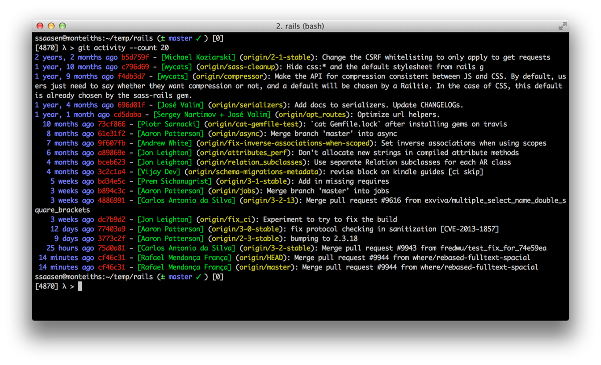
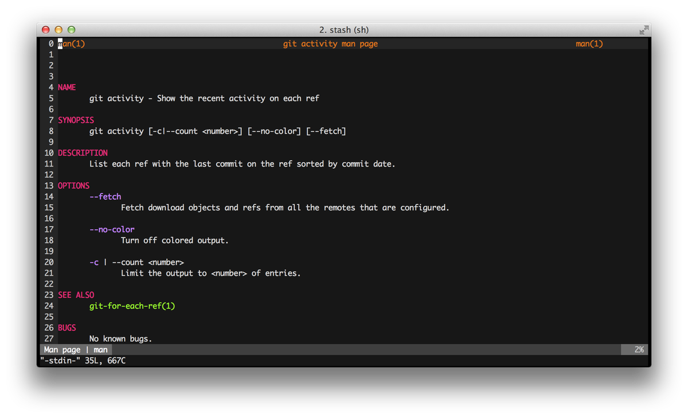

While Mercurial has a well defined (albeit internal) API that can be used to write extensions that extend the functionality of Mercurial, git's extension model follows the Unix philosophy of composing small, simple programs to achieve a similar effect. What that means is that git "extensions" can be written in any language and by following a few simple rules it's still possible to add commands that appear as if they were built-in.
Example: git activity
To see the activity on all the branches in a repository I've implemented a git activity command. git activity shows the latest commit on every branch, sorted by recency.
It shows the following output when executed in the Rails repository:

The
script is written in bash and fairly straightforward. We set up colours
and parse some command line options the scripts supports (e.g. to turn
off colors, to limit the output) and then run git for-each-ref to output information about each ref.
#!/bin/bash set -e GIT_OPTS="" OUTPUT_FILTER="cat" # no-op commit_id_format=$(tput setaf 1) date_format=$(tput bold; tput setaf 4) author_format=$(tput setaf 2) ref_name_format=$(tput setaf 3) bold=$(tput bold) reset=$(tput sgr0) function usage() { echo "" echo "git activity" echo "" echo " See 'man git-activity' for further information" } # actually parse the options and do stuff while [[ $1 = -?* ]]; do case $1 in -h|--help) usage exit 0 ;; --fetch) echo "Fetch updates" git fetch -q ;; -c|--count) shift limit=${1-"10"} #OUTPUT_FILTER="tail -n ${limit}" GIT_OPTS="--count=${limit}" ;; --no-color|--no-color) commit_id_format="" date_format="" author_format="" ref_name_format="" bold="" reset="" ;; *) ;; esac shift done # Use newline as a field separator IFS=$(echo -en "\n\b") # Use tac if available, otherwise tail with the possibly-not-always-available # -r flag (for reverse output) TAC=$(which tac || echo 'tail -r') for line in $(git for-each-ref ${GIT_OPTS} refs/remotes --format="%(authordate:relative)|%(objectname:short)|%(authorname)|%(refname:short)|%(subject)" --sort="-authordate"); do fields=(`echo $line | tr "|" "\n"`) printf "${date_format}%15s${reset} ${commit_id_format}%s${reset} - ${author_format}[%s]${reset} (${ref_name_format}%s${reset}): %s\n" ${fields[*]} done | eval $TAC # reverse sort the output to show the newest entry last
The important rules to follow to make this script available as a git sub-command are:
- It should be named
git-COMMANDNAME, in this case it's called git-activity - and it needs to be executable and available on the
$PATHIn my example the customgit-activityscript is in the/usr/local/bindirectory but it can be in any directory that is on the$PATH:
[5002] λ > type git-activity git-activity is /usr/local/bin/git-activity [5002] λ > git activity [...]Providing a manual/help page
If the custom command has an accompanying man page, the git help
command will show the help information as well. E.g. the man page for
the activity command is located in /usr/local/share/man/man1/git-activity.1 and can be show by either man git-activity or git help activity.
The manpath command can be used to show the locations the system uses to locate man pages:
[5003] λ > manpath /Users/ssaasen/.opam/system/man:/usr/local/share/man:/usr/share/man:\ /Users/ssaasen/.cabal/share/man:/opt/scala/manThe output for git help activity is (using https://bitbucket.org/ssaasen/git-pastiche/src/master/man/git-activity.1):

Bonus tip Man pages can easily be generated from Markdown using Pandoc:
[5010] λ > pandoc -s -w man doc/git-activity.1.md -o ./distribution/man/git-activity.1 # Display the man page for testing [5011] λ > nroff -man ./distribution/man/git-activity.1 # Show the actual man page being used after copying it to a known manpath location: [5012] λ > man -wa git-activity /usr/local/share/man/man1/git-activity.1Conclusion
By following a couple of simple rules and by embracing the Unix model of composing functionality out of small, focused programs and scripts, it turns out that it is surprisingly easy to extend git's functionality and making custom commands part of the git command suite.
More extensions
The source for git-activity and a few other commands can be found here: https://bitbucket.org/ssaasen/git-pastiche
Other additional git commands can be found here: